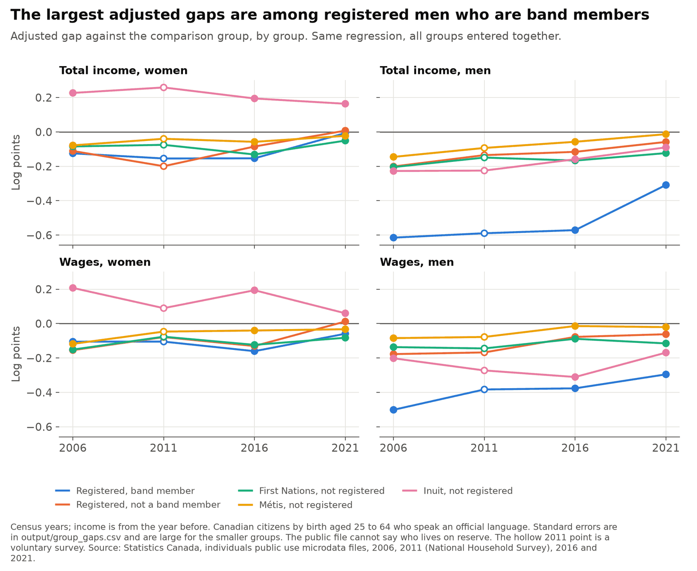

The Indigenous income gap in Canada across four censuses, and what can be said about it
I compare the income and wages of Indigenous and non-Indigenous Canadians with the same age group, education, official languages, marital status, area and household size, in four files: the 2006 Census, the 2011 National Household Survey, and the 2016 and 2021 Censuses. The sample is Canadian citizens by birth aged 25 to 64. It started as an assignment in a graduate applied econometrics course at Simon Fraser University, which applied the approach of Pendakur and Pendakur (2011) to 2006.
Personal project: my own analysis of publicly available data. It is not associated with my work for any current or past employer and does not represent their views. This describes a gap and what it is correlated with in these files. It does not identify causes. Nothing here measures the abilities, habits or culture of any group.
The main limit
The people counted as Indigenous changed between these files, so this series is not one group followed over time. Some people report an Indigenous identity in one census and not in the next. Laws on registered status changed, and so did the question wording and which communities were enumerated. A linked Statistics Canada study found that 24.6% of the 2016 Aboriginal identity population, in its terms, had reported as non-Aboriginal in 2011 (O'Donnell and LaPointe 2019). These files can't link people across years. So a narrower gap could reflect changes in income, changes in who reports, or both. Section 5 measures the net change.
The left-over part of the gap is not a measure of any one cause. It can include characteristics the files don't measure, time worked, location within the broad areas used here, tax treatment, measurement differences and discrimination. These data can't separate them.
At a glance
| Question | Methods | Answer |
|---|---|---|
| Does the 2006 work reproduce? | The assignment's regressions, OLS with robust errors | Closely. All 32 coefficients are within 0.35 of a standard error, but the sample differs by 0.7% for a reason I could not trace. |
| How did the gap change? | Weighted OLS by sex and year, replicate-weight errors | For men the adjusted wage gap went from −0.287 to −0.152 log points. For women it went from −0.107 to −0.043, most of it in 2021. |
| What do observed characteristics account for? | Oaxaca-Blinder decomposition | Roughly a third to a half of the gap among men and roughly 60% or more among women. Education is the largest part. |
| Who does the average cover? | Indicators by group | Gaps differ widely. They are largest among registered men who are band members. |
| How much is 2021 a pandemic result? | Total income less pandemic benefits | For men, 0.085 of the 0.126 narrowing in total income from 2016 to 2021 goes away when benefits are taken out. |
| Are these the same people over time? | Counts of the same birth years, and a what-if | No. The same birth years count 28% more Indigenous people in 2021 than in 2006, while the comparison group shrinks 4%. |
Gaps are in log points, the Indigenous group less the comparison group, so negative means lower. A gap of −0.15 is about 14% lower. The Indigenous group has an Indigenous identity or registered status. Income is from the year before each census.
1. How the gap changed

Among men, the adjusted wage gap went from −0.287 log points in 2006 to −0.152 in 2021, or from about 25% to about 14% lower. Among women, it went from −0.107 to −0.043, or from about 10% to about 4% lower, most of that in the last step. The direction agrees with Pendakur and Pendakur's later work on the full census files, though their sample, comparison group and start date differ.
| Gap, log points (standard error) | 2006 | 2011 | 2016 | 2021 |
|---|---|---|---|---|
| Wages, women, adjusted | −0.107 (0.017) | −0.074 (0.012) | −0.091 (0.010) | −0.043 (0.011) |
| Wages, men, adjusted | −0.287 (0.016) | −0.216 (0.016) | −0.177 (0.011) | −0.152 (0.007) |
| Total income, women, adjusted | −0.092 (0.014) | −0.088 (0.014) | −0.095 (0.007) | −0.011 (0.007) |
| Total income, men, adjusted | −0.377 (0.012) | −0.308 (0.010) | −0.284 (0.015) | −0.158 (0.006) |
Annual wages combine pay with time worked. Among men working full-time for 49 weeks or more, the adjusted gap is −0.127 in 2006 and −0.063 in 2021. That is a description of two samples. It doesn't show that time worked is a matter of choice, since it also depends on what work is available.
2. What observed characteristics account for

A decomposition puts the share of the raw wage gap accounted for by measured characteristics at 31% to 54% among men and 62% to 80% among women, depending on the year and whose coefficients are used. Education is the largest part.

The rest is not a measure of any one cause, and the measured characteristics can themselves reflect earlier disadvantage, including discrimination. The decomposition doesn't say what would happen if any characteristic changed.
3. The average covers very different groups

The largest gaps are among registered men who are band members: −0.50 in wages in 2006 and −0.30 in 2021. The public files have no on-reserve variable, so this is not a statement about reserves. The assignment's labels had suggested it was, and that is corrected here. Many band members live off reserve.
Inuit women have a positive gap in all years. The area control does not separate the North, so this isn't a like-for-like comparison of places.
4. 2021 and the pandemic
Income in the 2021 file is from 2020 and includes pandemic benefits, which more Indigenous people received. Taking them out moves the adjusted total income gap for men from −0.158 to −0.243 and for women from −0.011 to −0.060, so total income in 2021 should not be read as a new level. The wage series is the better guide to the trend, though 2020 was also a disrupted year for work.
5. Whether these are the same people

People aged 25 to 44 in 2006 are counted again at each later census. The comparison group shrinks by 4% by 2021, while the Indigenous group in the same birth years grows by 28%. Changes in reporting, law and coverage can't be separated here.
If every net addition had the comparison group's income, the wage gap among men in these birth years would still narrow, from −0.336 to −0.187, and among women from −0.110 to −0.063. This uses net change only and is not a true bound: movement in and out is much larger than the net, and nothing is known here about the income of those who stopped reporting.
Other limits
- 2011 is a different kind of source. The National Household Survey was voluntary, with a final response rate of 68.6%, against 95.7% for the 2021 long form.
- Coverage of reserves changes. Incompletely enumerated reserves and settlements number 22 in 2006, 36 in 2011, 14 in 2016 and 63 in 2021, and these files can't restrict to communities enumerated in every year.
- Income sources changed, from the form or tax records in 2006 and 2011 to administrative records alone in 2016 and 2021.
- People with no income or wages are left out, and the share with $1,000 or more of wages is lower in the Indigenous group. That difference did not narrow.
- The area control is coarse, with no province, North or reserve control.
- "Registered" stands for Statistics Canada's variable "Registered or Treaty Indian status", a legal term under the Indian Act.
Data
Statistics Canada individuals public use microdata files: 2006 Census, 2011 National Household Survey, 2016 and 2021 Censuses. Sources include O'Donnell and LaPointe (2019), "Response mobility and the growth of the Aboriginal identity population, 2006-2011 and 2011-2016", and Pendakur and Pendakur (2011), "Aboriginal Income Disparity in Canada", Canadian Public Policy.
Adapted from Statistics Canada; this does not constitute an endorsement by Statistics Canada of this product.